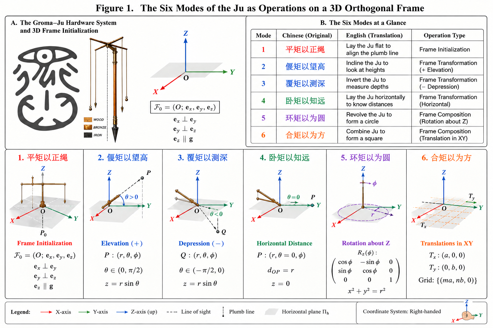
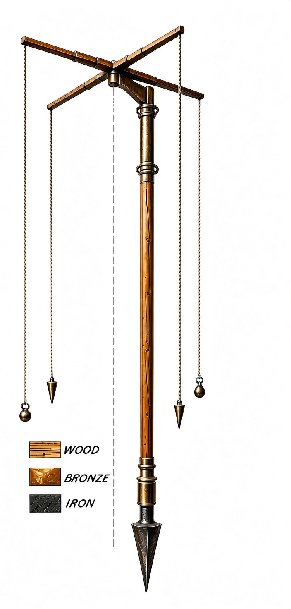
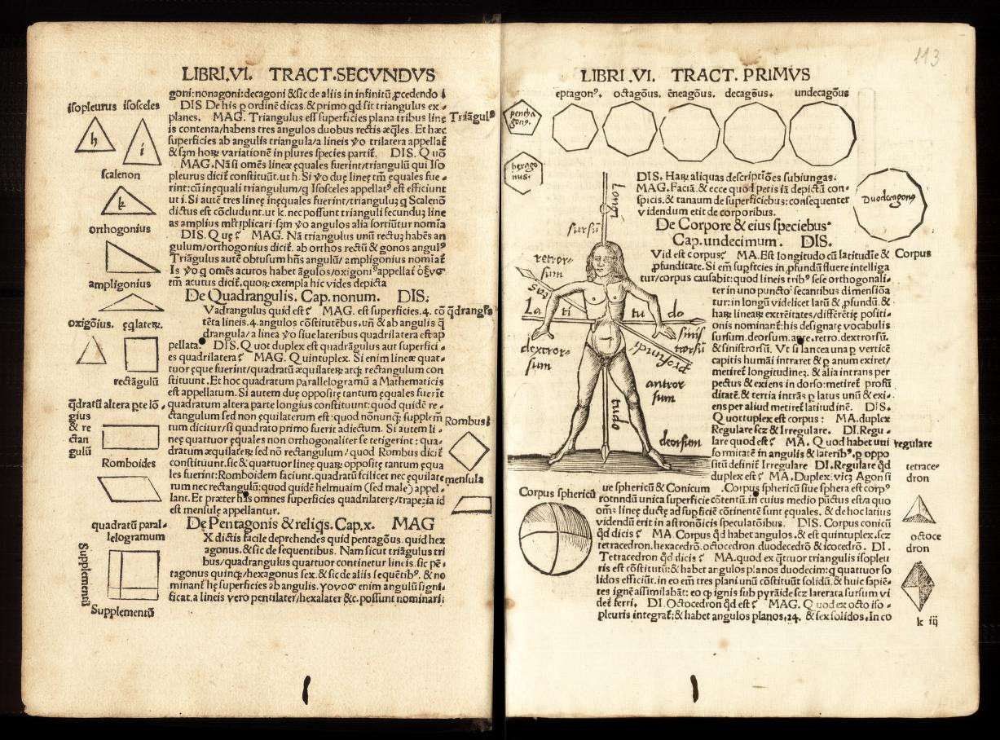
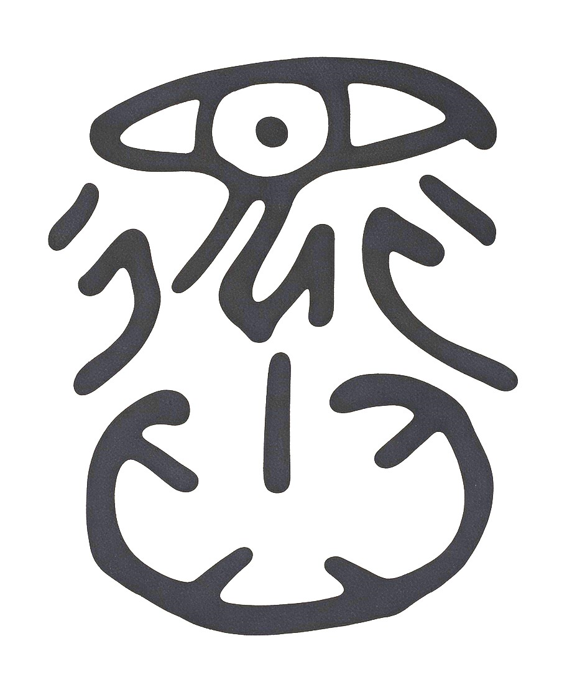

Groma-Ju Dao: The Six Modes of the Zhoubi Suanjin "Ju" as a Geometric Operator System
DW58553910
The opening dialogue of the Zhoubi Suanjing records Shang Gao's six oral instructions on the "Way of the Ju" 用矩之道 to the Duke of Zhou: Ping Ju Yi Zheng Sheng 平矩以正绳, Yan Ju Yi Wang Gao 偃矩以望高, Fu Ju Yi Ce Shen 覆矩以测深, Wo Ju Yi Zhi Yuan 卧矩以知远, Huan Ju Yi Wei Yuan 环矩以为圆, and He Ju Yi Wei Fang 合矩以为方. For over two millennia, these six phrases have commonly been read either as independent measuring techniques or as instructions for a two-dimensional carpenter's square.
This paper presents a reconstructive thought experiment: the six instructions are not independent techniques, but six modes of a single geometric operator system. Following the Gui-Ju Dao framework, which redefines the Ju as the minimal unit of an observer-centered three-dimensional orthogonal coordinate system, we introduce the Roman Groma surveying system---comprising Groma, Dioptra, level, and plumb---as an independent engineering parallel to the Ju. We then reconstruct each of Shang Gao's six operations in precise geometric terms.
Within this reconstruction we show that:
- Ping Ju Yi Zheng Sheng 平矩以正绳 is the initialization of the 3D orthogonal frame $\mathcal{F}_0=(O;\mathbf{e}_x,\mathbf{e}_y,\mathbf{e}_z)$.
- Yan Ju Yi Wang Gao 偃矩以望高 and Fu Ju Yi Ce Shen 覆矩以测深 are the positive and negative directions of the same vertical-angle operator $\pm\theta$.
- Wo Ju Yi Zhi Yuan 卧矩以知远 is horizontal triangulation.
- Huan Ju Yi Wei Yuan 环矩以为圆 is the rotation $R_Z(\phi)$ about the $Z$-axis, generating the circle $x^2+y^2=r^2$.
- He Ju Yi Wei Fang 合矩以为方 is the translation combination $(T_x,T_y)$, generating orthogonal grids.
The six operations unify under a single 3D orthogonal frame $\mathcal{F}_0$ as a three-level system: frame initialization, frame transformation, and frame composition. The six oral instructions of the Zhoubi Suanjing may therefore constitute one of the earliest known encodings of a geometric instruction set in human civilization. The paper further maps this system onto the Kao Gong Ji state-surveying protocol, the "4+1" meta-structure of classical Chinese cosmic frameworks, the embodied gnomon of Gregor Reisch's 1503 Demonstratio, the Wu Qi 無器 ontology of the Xuan Yin Yi Mi, and the $2^6=64$ hexagram state space of the I Ching.
Keywords: Zhoubi Suanjing; Shang Gao; Ju; Groma; Gui-Ju Dao; Geometric Operator System; 3D Orthogonal Frame; Shen Zheng; Wu Qi; 4+1 Meta-Structure; I Ching; Cosmic Engineering
Groma-Ju Dao: The Six Modes of the Zhoubi Suanjing "Ju" as a Geometric Operator System
Baoliin (Zaitian) Wu 伍宝林
ORCiD: 0009-0003-2051-5247
Email: zaitian001@gmail.com
Affiliation: People's Government of Guangdong Province: Guangzhou, CN
Date: September 14, 2026
Abstract
The opening dialogue of the Zhoubi Suanjing records Shang Gao's six oral instructions on the "Way of the Ju" 用矩之道 to the Duke of Zhou: Ping Ju Yi Zheng Sheng 平矩以正绳, Yan Ju Yi Wang Gao 偃矩以望高, Fu Ju Yi Ce Shen 覆矩以测深, Wo Ju Yi Zhi Yuan 卧矩以知远, Huan Ju Yi Wei Yuan 环矩以为圆, and He Ju Yi Wei Fang 合矩以为方. For over two millennia, these six phrases have commonly been read either as independent measuring techniques or as instructions for a two-dimensional carpenter's square. This paper presents a reconstructive thought experiment: the six instructions are not independent techniques, but six modes of a single geometric operator system. Following the Gui-Ju Dao framework, which redefines the Ju as the minimal unit of an observer-centered three-dimensional orthogonal coordinate system, we introduce the Roman Groma surveying system—comprising Groma, Dioptra, level, and plumb—as an independent engineering parallel to the Ju. We then reconstruct each of Shang Gao's six operations in precise geometric terms. Within this reconstruction we show that: 1. Ping Ju Yi Zheng Sheng 平矩以正绳 is the initialization of the 3D orthogonal frame $\mathcal{F}_0=(O;\mathbf{e}_x,\mathbf{e}_y,\mathbf{e}_z)$. 2. Yan Ju Yi Wang Gao 偃矩以望高 and Fu Ju Yi Ce Shen 覆矩以测深 are the positive and negative directions of the same vertical-angle operator $\pm\theta$. 3. Wo Ju Yi Zhi Yuan 卧矩以知远 is horizontal triangulation. 4. Huan Ju Yi Wei Yuan 环矩以为圆 is the rotation $R_Z(\phi)$ about the $Z$-axis, generating the circle $x^2+y^2=r^2$. 5. He Ju Yi Wei Fang 合矩以为方 is the translation combination $(T_x,T_y)$, generating orthogonal grids. The six operations unify under a single 3D orthogonal frame $\mathcal{F}_0$ as a three-level system: frame initialization, frame transformation, and frame composition. The six oral instructions of the Zhoubi Suanjing may therefore constitute one of the earliest known encodings of a geometric instruction set in human civilization. The paper further maps this system onto the Kao Gong Ji state-surveying protocol, the "4+1" meta-structure of classical Chinese cosmic frameworks, the embodied gnomon of Gregor Reisch's 1503 Demonstratio, the Wu Qi 無器 ontology of the Xuan Yin Yi Mi, and the $2^6=64$ hexagram state space of the I Ching.
Keywords: Zhoubi Suanjing; Shang Gao; Ju; Groma; Gui-Ju Dao; geometric operator system; 3D orthogonal frame; Shen Zheng; Wu Qi; 4+1 meta-structure; I Ching; cosmic engineering.
Notation
| Symbol | Meaning | First Definition |
|---|---|---|
| $\mathcal{F}_0=(O;\mathbf{e}_x,\mathbf{e}_y,\mathbf{e}_z)$ | Observer-centered 3D orthogonal frame | Eq. (1) |
| $O=(0,0,0)^T$ | Origin | Eq. (4) |
| $\Pi_h$ | Horizontal reference plane | §1 |
| $Z\parallel\mathbf{g}$ | Vertical axis parallel to gravity | Eq. (3) |
| $R_Y(\theta)$ | Rotation about $Y$-axis | Eq. (7) |
| $R_Z(\phi)$ | Rotation about $Z$-axis | Eq. (15) |
| $T_x(b),T_y(b)$ | Translation along $X,Y$-axes | Eqs. (11), (18) |
| $\mathcal{J}$ | Six-mode operator system | Eq. (23) |
1. Introduction: The Six Oral Instructions
The Zhoubi Suanjing opens with a dialogue:
The Duke of Zhou asked Shang Gao… Shang Gao said: "Lay the Ju flat to align the plumb line; incline the Ju to look at heights; invert the Ju to measure depths; lay the Ju horizontally to know distances; revolve the Ju to form a circle; combine Ju to form a square."
This paper does not address questions of textual dating, transmission, or cross-cultural influence. It treats the six instructions as a self-contained geometric system and asks a single question: Can these six instructions be reconstructed as six operation modes of a single geometric hardware system?
We approach this as a reconstructive thought experiment. The experimental apparatus is defined as
| Component | Function | Geometric Role |
|---|---|---|
| Groma | Cross-frame with plumb lines, establishing straight lines and right angles | Orthogonal frame $(X\perp Y)$ |
| Dioptra | Rotatable sighting tube, reading elevation/depression/horizontal angles | Angle operator $(\theta,\phi)$ |
| Libra / Chorobates | Leveling instrument | Horizontal基准 $(\Pi_h)$ |
| Plumb | Plumb line | Vertical基准 $(Z\parallel \mathbf{g})$ |
| Rods / Cords | Measuring rods and ropes | Length scale $(L)$ |
Crucially, no single instrument bears the full functional burden. The Ju, in this reconstruction, is not a single artifact but an abstract geometric operator system—a set of operations realizable through different hardware implementations across civilizations.
The present study confirms the traditional attribution of these six instructions to Shang Gao as recorded in the Zhoubi Suanjing. However, this should not be taken to mean that Shang Gao himself formulated, defined, or conceptualized the six statements in the modern geometric and operator-theoretic language used in this reconstruction. The geometric operators introduced here are a contemporary formal reconstruction imposed on the textual instructions for the purpose of testing their structural coherence.
2. Mode 1: Ping Ju Yi Zheng Sheng 平矩以正绳 — Frame Initialization
Translation: Lay the Ju flat to align the plumb line.
Gromaticus Operation:
- Set the Groma stand. Align the central plumb line's metal point with the ground station $P_0$:
- Level the cross-frame using the level/plumb, ensuring
- The plumb line establishes
Geometric Result:
with
and
A complete three-dimensional orthogonal reference frame is established. The observer is positioned at the origin $O$. This is the coordinate frame initialization—the foundational operation upon which all subsequent modes depend.
Visual: Groma stand with cross-frame, leveled horizontal plane $\Pi_h$, and vertical plumb line $Z$ (Figure 1).
3. Mode 2: Yan Ju Yi Wang Gao 偃矩以望高 — Elevation
Translation: Incline the Ju to look at heights.
Target: Measure the height $H=TB$ of a tower, where the base $B$ is accessible but the top $T$ is not directly measurable.
Gromaticus Operation:
- Groma provides the orthogonal reference $\mathcal{F}_0$ at station $O$, with known horizontal distance $D=OB$ to the tower base.
- Dioptra is mounted and rotated to elevation angle $+\theta$, sighting the tower top $T$.
- The sight line $O\to T$ forms angle $\theta$ with the horizontal plane.
Geometric Result:
Under the idealized level-ground reconstruction:
Classical Similar-Triangle Version:
Geometric Essence: This is the frame transformation
The horizontal axis is tilted upward. This is the elevation projection of the 3D frame.
Visual: Right triangle with horizontal base $D$, vertical height $H$, elevation angle $\theta$ at observer station $O$.
4. Mode 3: Fu Ju Yi Ce Shen 覆矩以测深 — Depression
Translation: Invert the Ju to measure depths.
Target: Measure the depth $H$ of a well or vertical shaft.
Gromaticus Operation:
- Groma provides the orthogonal reference $\mathcal{F}_0$ at the well edge.
- Dioptra is rotated to depression angle $-\theta$, sighting the well bottom $B$.
- The sight line forms angle $|\theta|$ with the horizontal plane.
Geometric Result:
Under the idealized level-ground reconstruction:
Geometric Essence: This is the frame transformation
Yan and Fu are not two different mathematical methods; they are the positive and negative directions of the same vertical-angle operator:
They are geometric mirror images of each other.
Visual: Right triangle with horizontal offset $D$, vertical depth $H$, depression angle $|\theta|$ at observer station $O$.
5. Mode 4: Wo Ju Yi Zhi Yuan 卧矩以知远 — Horizontal Triangulation
Translation: Lay the Ju horizontally to know distances.
Target: Measure an inaccessible horizontal distance $AB$.
Gromaticus Operation:
- Groma provides the orthogonal reference $\mathcal{F}_0$ at station $O$.
- Establish a baseline $OO'=b$ along one axis:
- Dioptra measures the horizontal angle $\phi_1=\angle AOB$ to target $A$.
- A second observation from station $O'$ provides $\phi_2=\angle AO'B$.
- Triangulation yields the inaccessible distance $AB$.
Geometric Result:
Using the law of sines:
Or, in the classical similar-triangle form:
Geometric Essence: This is the frame transformation
followed by horizontal angular projection. The orthogonal frame is extended through baseline measurement and angular sighting.
Visual: Two observation stations $O,O'$ with baseline $b$, target $A$, and horizontal angles $\phi_1,\phi_2$.
6. Mode 5: Huan Ju Yi Wei Yuan 环矩以为圆 — Circle Generation
Translation: Revolve the Ju to form a circle.
Target: Generate a precise circle in physical space.
Gromaticus Operation:
- Groma fixes $O$ and maintains $Z\parallel \mathbf{g}$: $\mathcal{F}_0$.
- Fix one measuring arm at length $r$ (constant).
- Rotate the arm about the $Z$-axis:
- The endpoint traces
Geometric Result:
Geometric Essence: This is the frame transformation
This is the first operation that requires the $Z$-axis established in Mode 1. The circle is the trajectory of a point rotated about the vertical axis.
The Gui (compass/circle) is geometrically the trajectory of the Ju (square/frame) rotated about the $Z$-axis. Circle is generated by square.
This establishes a clear hierarchy:
Visual: Groma at center $O$, rotating arm of length $r$, circular trajectory $x^2+y^2=r^2$.
7. Mode 6: He Ju Yi Wei Fang 合矩以为方 — Grid Composition
Translation: Combine Ju to form a square.
Target: Establish a precise orthogonal square grid.
Gromaticus Operation:
- Use Groma to establish the first right angle $X\perp Y$ at origin $O$: $\mathcal{F}_0$.
- Translate along $X$:
- Translate along $Y$:
- Repeat to generate four corners $A,B,C,D$.
Geometric Result:
Geometric Essence: This is the frame composition:
The local frame is replicated across space to generate a global orthogonal grid. This is the operation that transforms a single measurement station into a universal spatial grid.
Visual: Four corners $A,B,C,D$ forming a square/rectangle, with orthogonal axes $X,Y$.
8. Synthesis: The Six Modes as a Three-Level Operator System
Figure 1. The Six Modes of the Ju as Operations on a 3D Orthogonal Frame.

The six operations form a coherent three-level structure.
8.1 Level I — Frame Initialization
8.2 Level II — Frame Transformation
8.3 Level III — Frame Composition
This yields the unifying operator sequence:
| Mode | Operation | Geometric Operator | Level |
|---|---|---|---|
| Ping 平 | Lay flat + plumb | Initialize $\mathcal{F}_0$ | I: Frame Creation |
| Yan 偃 | Incline upward | $R_Y(+\theta)$, $H=D\tan\theta$ | II: Frame Transformation |
| Fu 覆 | Invert downward | $R_Y(-\theta)$, $H=D\tan\lvert\theta\rvert$ | II: Frame Transformation |
| Wo 卧 | Lay horizontally | $T_x(b)$, triangulation | II: Frame Transformation |
| Huan 环 | Revolve | $R_Z(\phi)$, $x^2+y^2=r^2$ | II: Frame Transformation |
| He 合 | Combine | $T_x(a)T_y(b)$, orthogonal grid | III: Frame Composition |
The six instructions can thus be compressed into a single system:
Each mode is a specific projection, rotation, or composition of the same $\mathcal{F}_0$ frame. The six instructions are not six independent techniques; they are six modes of a single geometric operator system.
Figure 2. Schematic Reconstruction of the Roman Groma–Ju Discovered in Pompeii; not to scale.

9. The Gui-Ju Dao as a Complete Cosmic Engineering System
9.0 From Operational Geometry to Ontological Symbolization
The six-mode Groma–Ju system is first an operational geometry. Yet any repeatedly executed operational geometry tends to generate three higher-order sediments: first, an ontological vocabulary of origin, vessel, and return; second, a symbolic encoding of operational states; third, a cosmological interpretation that projects the measurement system onto Heaven and Earth. Sections 9.1–9.6 trace the engineering and institutional dimension of this process. Sections 9.7–9.9 trace its ontological and symbolic crystallization. The movement is not from philosophy to engineering, but from engineering to ontology and back.
9.1 The Ultimate Goal: Measuring Heaven and Earth
The Zhoubi Suanjing does not present the six Ju operations as mere land-surveying tricks. Its ultimate goal is cosmic in scale: to establish the calendar and degrees of the celestial sphere, and to measure the heights of Heaven and the depths of Earth.
商高曰："方属地，圆属天，天圆地方，方数为典，以方出圆。"
Shang Gao said: "The square pertains to Earth; the circle to Heaven. Heaven is round, Earth is square. The square is the standard of number; by the square, the circle is produced."
This is the foundational axiom of the entire Gui-Ju Dao: the discrete, measurable square (Earth) is the instrument by which the continuous, infinite circle (Heaven) is brought into the domain of computable geometry. The six modes—Ping, Yan, Fu, Wo, Huan, He—are the operational grammar through which this axiom is executed. The Groma–Ju system is, in this light, a physical mechanism for projecting the celestial order onto terrestrial space.
9.2 The Zhoubi Suanjing in Action: The Kao Gong Ji Record of State Surveying
The six-mode Groma–Ju reconstruction presented above finds a remarkable independent confirmation in one of the earliest Chinese engineering texts: the Kao Gong Ji 考工记, a chapter of the Zhou Li 周礼 traditionally dated to the Warring States period but preserving practices from the Western Zhou.
The Kao Gong Ji records the complete surveying protocol for the foundation of a royal capital, attributed to the Jiang Ren 匠人, Master Builder:
匠人建国，水地以县，置槷以县，视以景，为规，识日出之景与日入之景，昼参诸日中之景，夜考之极星，以正朝夕。
The Master Builder, when establishing a capital, levels the ground with a plumb line; sets up a gnomon with a plumb line; observes its shadow; makes a circle; marks the shadow at sunrise and the shadow at sunset; consults the midday shadow; and at night examines the Pole Star—thus correcting east and west.
This passage, when read through the Groma–Ju geometric operator system, reveals a complete surveying protocol that maps directly onto the six modes we have reconstructed.
9.2.1 The Eight-Step Protocol as Groma–Ju Operations
| Step | Text | Groma–Ju Operation | Geometric Function |
|---|---|---|---|
| 1 | 水地以县 (level the ground with a plumb line) | Ping 平 — frame initialization | Establish $\Pi_h$: $X,Y\in\Pi_h$ |
| 2 | 置槷以县 (set up a gnomon with a plumb line) | Ping 平 — vertical calibration | Establish $Z\parallel \mathbf{g}$ |
| 3 | 视以景 (observe its shadow) | Yan 偃 — elevation observation | Begin astronomical projection |
| 4 | 为规 (make a circle) | Huan 环 — circle generation | $R_Z(\phi)$, $x^2+y^2=r^2$ |
| 5 | 识日出之景 (mark the sunrise shadow) | Wo 卧 — horizontal projection | Mark point $P_{\text{dawn}}$ on circle |
| 6 | 识日入之景 (mark the sunset shadow) | Wo 卧 — horizontal projection | Mark point $P_{\text{dusk}}$ on circle |
| 7 | 昼参诸日中之景 (consult the midday shadow) | He 合 — grid composition | Establish $Y$-axis (north–south) |
| 8 | 夜考之极星 (examine the Pole Star at night) | Ping 平 — frame verification | Calibrate $Y$-axis against celestial north |
9.2.2 The Central Operation: Wei Gui 为规 as Huan Ju 环矩
The fourth step, 为规 (wei gui, "make a circle"), is the geometric key to the entire protocol. In the traditional interpretation, this has been understood simply as "draw a circle with a compass." In the Groma–Ju reconstruction, however, it receives a more precise geometric interpretation:
为规 is the rotation of the Groma cross-arm about the vertical $Z$-axis—the physical execution of the Huan Ju 环矩 mode.
The operation proceeds as follows:
- The Groma is fixed at station $O$, with the plumb line ensuring $Z\parallel \mathbf{g}$.
- One arm of the cross-frame is fixed at length $r$.
- The arm is rotated about the $Z$-axis:
- The endpoint traces the circle:
The circle is not drawn with a separate compass; it is generated by the rotation of the Ju-derived arm about the vertical axis. This is precisely the geometric relationship we established in Mode 5: the Gui is the trajectory of the Ju rotated about the $Z$-axis.
9.2.3 The Complete Geometric Protocol
When the full eight-step protocol is executed, the geometric results unfold as follows:
Steps 1–2 (Ping): The Groma establishes $\mathcal{F}_0=(O;\mathbf{e}_x,\mathbf{e}_y,\mathbf{e}_z)$. The gnomon is vertical; the ground is level.
Step 3 (Yan): The observer sights the sun, recording the shadow direction and length.
Step 4 (Huan): The Groma arm rotates, generating the circle
on the ground.
Steps 5–6 (Wo): At sunrise, the shadow tip falls on the circle at $P_{\text{dawn}}$. At sunset, it falls on the circle at $P_{\text{dusk}}$. The line connecting $P_{\text{dawn}}$ and $P_{\text{dusk}}$ is precisely the east–west axis:
Step 7 (He): At midday, the shortest shadow indicates the north–south direction, completing the orthogonal grid:
Step 8 (Ping, verification): At night, the Pole Star confirms the north–south alignment, calibrating the entire frame against the celestial reference.
9.2.4 The Cross-Civilizational Convergence
| Operation | Kao Gong Ji (Zhou China) | Roman Gromaticus | Geometric Function |
|---|---|---|---|
| Level + plumb | 水地以县 + 置槷以县 | Level + Plumb | Establish $\Pi_h$, $Z$ |
| Circle generation | 为规 | Groma rotation | $R_Z(\phi)$, $x^2+y^2=r^2$ |
| East–west axis | 识日出/日入之景 | Decumanus (east–west) | $X$-axis from shadow points |
| North–south axis | 昼参日中之景 | Cardo (north–south) | $Y$-axis from midday shadow |
| Celestial calibration | 夜考之极星 | Pole Star sighting | Verify $Y$-axis |
Two civilizations, separated by geography and language, confronting the same engineering problem—the foundation of a city aligned with the cosmic order—converged on the same geometric operator sequence.
9.2.5 The Kao Gong Ji as Independent Evidence
First, the Kao Gong Ji provides independent documentary evidence that the six-mode operator system reconstructed from Shang Gao's oral instructions was actually practiced in state engineering. The text does not merely list tools; it records a complete operational protocol—a sequence of steps that must be executed in order.
Second, the Kao Gong Ji confirms the central role of the circle in the Ju-based surveying system. The Gui is not a separate instrument brought in for a special purpose; it is the direct geometric product of the Ju's rotation about the $Z$-axis. The protocol explicitly requires "making a circle" 为规 before the east–west axis can be determined—exactly as the Groma–Ju reconstruction predicts.
9.2.6 A Note on Historical Interpretation
The Kao Gong Ji dates from the Warring States period (c. 5th–3rd century BCE), several centuries after the traditional date of Shang Gao (c. 11th century BCE). However, the text explicitly preserves earlier practices—the Jiang Ren protocol is presented as a standard procedure, not a recent innovation.
The present study does not claim that the Warring States author of the Kao Gong Ji understood the geometric formalism developed in this paper. The geometric operators introduced here are a contemporary formal reconstruction—a way of interpreting the textual instructions through the lens of the Gui-Ju Dao framework. What the Kao Gong Ji provides is a textual witness to the operational structure we have reconstructed: a sequence of geometric operations (level, align, observe, rotate, mark, triangulate, verify) that matches the six modes of the Groma–Ju system.
9.2.7 Summary: The Kao Gong Ji as a Field Manual
The Kao Gong Ji "Master Builder" protocol can now be understood as a field manual for the Groma–Ju geometric operator system:
- The level and plumb establish the orthogonal frame $\mathcal{F}_0$.
- The gnomon and shadow observations project celestial information onto the ground.
- The circle generated by rotation about $Z$ provides the geometric reference for determining the east–west axis.
- The midday shadow and Pole Star confirm the north–south axis.
- The complete frame $(X,Y,Z)$ provides the foundation for city planning—the "square" 方 of the final operation.
This protocol is, in effect, the same geometric instruction set that the Groma–Ju reconstruction derives from Shang Gao's six oral instructions—executed in the field by the Master Builder of the Zhou royal court.
9.3 The Units of Measurement: Li, Bu, Du
The Zhoubi Suanjing established a complete three-tier system of measurement units, enabling the quantification of both earthly distances and celestial arcs:
- Li 里: the primary unit of terrestrial distance, used for mapping the extent of lands and the paths of the sun's shadow.
- Bu 步: the subunit of the Li, used for finer terrestrial measurements.
- Du 度: the unit of celestial arc, with a fixed conversion to linear distance—one degree corresponding to a specific number of Li and Bu.
This system ensured that angular measurements of the sky could be converted into linear distances on Earth, making the cosmos computationally tractable. The Ju, through its six modes, was the instrument that operationalized this conversion.
9.4 The Professional Surveyors of the Zhou: Evidence from the Zhou Li
The Zhoubi Suanjing was not an isolated text. The Zhou Li records a fully institutionalized system of professional surveyors, each with specific duties:
- Liang Ren 量人: in charge of establishing the methods for the capital cities and the nine provinces.
- Tu Fang Shi 土方氏: in charge of the gnomon (Tu Gui) method for establishing states and capitals.
- Si Xian 司险: in charge of roads and passes.
- Si Kong 司空: in charge of measuring land and distances.
- Xing Fang Shi 形方氏: in charge of the geographical forms of the states.
These offices confirm that the Gui-Ju Dao was not a philosophical abstraction but a state-sponsored engineering discipline, with professional practitioners, standardized instruments, and codified procedures. Shang Gao's six oral instructions were, in effect, the field manual for this national surveying corps.
9.5 Conjecture: The Earliest Chinese Topographic Maps [L3]
The earliest known Chinese topographic map is the silk Terrain Map (Dixing Tu) unearthed from Mawangdui Tomb No. 3 (c. 168 BCE). It depicts the Xiang River basin, the Xiao River, the Nanling Mountains, and the Jiuyi Mountain range with remarkable precision. This map demonstrates that by the Western Han period, Chinese surveyors possessed the capability for regional three-dimensional mapping—transforming terrestrial relief into a two-dimensional planimetric representation.
Conjecture [L3]: This mapping capability must have relied on a mature geometric surveying system. The Groma–Ju six-mode system—with its ability to establish orthogonal frames, measure elevations and distances, and compose grids—provides exactly the operational toolkit required for such mapping. The Terrain Map may thus be a material witness to the Gui-Ju Dao in action: the square (the orthogonal frame) projecting the circle (the curved terrain) onto the silk (the two-dimensional plane).
9.6 Conjecture: The Multiplication Table as a Mental Arithmetic Accelerator [L3]
The earliest known Chinese multiplication table is the Jiujiu Biao 九九表 inscribed on wooden slips from the Qin dynasty site of Liye (c. 220 BCE)—the world's earliest complete multiplication table. This table lists products of numbers from 1 to 9, providing a ready reference for rapid calculation.
Conjecture [L3]: The Jiujiu Biao served as a mental arithmetic accelerator for surveyors in the field. The six Ju operations—particularly the triangulation of Mode 4 卧矩以知远 and the area calculations implied by Mode 6 合矩以为方—require repeated multiplication and division. In the absence of digital calculators, the Jiujiu Biao provided a standardized, memorizable lookup table for these operations. The Zhoubi Suanjing and its successor, the Haidao Suanjing, both rely heavily on the proportional reasoning of similar triangles—calculations that the Jiujiu Biao would have accelerated significantly. In modern terms: the Ju provided the geometric instruction set; the Jiujiu Biao provided the hardware-accelerated arithmetic unit.
Linear Matrix Transformation of the Jiujiu Biao Arithmetic Accelerator in Mode 4
Under Mode 4: Wo Ju Yi Zhi Yuan 卧矩以知远, the observer establishes a terrestrial measurement system via horizontal triangulation. To demonstrate how the ancient Jiujiu Biao multiplication table acts as a mental arithmetic hardware accelerator, we map the proportional properties of the similar triangles onto an explicit coordinate projection matrix.
Let the observer origin be $O(0,0,0)^T$. Let a calibrated base distance along the $X$-axis decumanus line be defined by the translation operator $T_x(b)\mathcal{F}_0$, yielding a secondary observation station at $O'(b,0,0)^T$. The target vertex in physical space is positioned at an inaccessible coordinate $A(x_A,y_A,0)^T$.
In the field manual protocol, a miniature scale-invariant physical alignment framework ("small Ju") is maintained directly at the origin, with localized reference measurements $c$ and $d$. The geometric mapping from the local, instrument-scale variables $[b,c,d]^T$ to the macroscopic spatial vector of the target point $\mathbf{X}_A=[x_A,y_A,1]^T$ in homogeneous coordinates is governed by the LUT-Accelerated Scalar Projection in Mode 4:
The Jiujiu Biao functions as a discrete look-up table:
By matching the integer values of $b$ and $d$ on the wooden slips, the division phase is bypassed through fixed rational proportions. The table is therefore not merely a basic arithmetic lesson, but a hardware-accelerated algorithmic shortcut for computing spatial coordinate components dynamically in the field.
9.7 The "4+1" Meta-Structure: A Structural Pattern Across Classical Chinese Cosmic Frameworks
If Sections 2–8 reconstruct the instruction set, Section 9.7 asks why this instruction set should converge with the Hetu, Luoshu, I Ching, Tai Xuan Jing, and Wu Xing. The answer is not direct influence but operational necessity: a measurement system centered on one observer-origin and four directional dual domains will naturally project onto a "4+1" pattern. The convergence is therefore a structural invariant, not a historical borrowing.
Alongside the Hetu 河图, the Luoshu 洛书, the I Ching 易经, the Tai Xuan Jing 太玄经, and the Wu Xing 五行 system, the Groma–Ju six-mode operator system reveals a recurring structural pattern. These frameworks exhibit, to varying degrees, a configuration abstractable as
| Framework | The "4+1" Pattern |
|---|---|
| Hetu 河图 | Four generative pairs around central 5: (1,6), (2,7), (3,8), (4,9), with (5,10) at center |
| Luoshu 洛书 | Four symmetric pairs around central 5: (1,9), (2,8), (3,7), (4,6), with 5 in the center |
| I Ching 易经 | Four paired trigrams (乾坤, 兑艮, 离坎, 震巽) around the Taiji 太极 |
| Tai Xuan Jing 太玄经 | Four external duals (1 ↔ 6, 2 ↔ 7, 3 ↔ 8, 4 ↔ 9) with 5 ↔ 5 self-pairing at the center |
| Wu Xing 五行 | Four phases (木火金水) circulating around the central Earth (土), with generating (S) and overcoming (K) cycles as $\mathbb{Z}_5$ dynamics |
| Groma–Ju (Six Operations) | Four external dual domains: Vertical (偃 ↔ 覆), Horizontal E–W (卧东 ↔ 卧西), Horizontal N–S (卧南 ↔ 卧北), Rotational (环 ↔ 合); plus central self-anchoring (平) |
9.7.1 The "1": Shen Zheng 身正 and the Observer–Gnomon Unity
The "1" is not a physical object but a state of being—the state of shen zheng 身正, "body upright." Before any measurement can begin, the observer must first stand upright, aligning the spine with the direction of gravity. This is the first and most fundamental operation: Ping Ju yi zheng sheng 平矩以正绳, "level the gnomon to true the plumb-line."
Shen zheng operates on three levels:
- Physical: The observer's spine becomes the gnomon 臬. When the plumb-line verifies the gnomon's verticality, it simultaneously verifies the observer's posture. The gnomon is not an external tool but the observer's body projected into the earth.
- Operational: Every subsequent measurement depends on shen zheng. The causal chain is: shen zheng → gnomon upright → shadow accurate → four directions true. If the observer is not upright, the entire system collapses.
- Ontological: The observer must first rectify himself before he can rectify the cosmos. This mirrors the Daxue 大学 sequence: "身修而后家齐，家齐而后国治，国治而后天下平." The character 正 (zheng, "upright/true") is the lexical fossil connecting bodily rectitude to cosmic order.
The "1" is thus defined as the indivisible unity of observer and gnomon:
身者，本也—the body is the root. This arrow expresses the dynamic of Tian Ren He Yi 天人合一, "Heaven and Human as One": the observer's body-coordinate system aligns with the celestial coordinate system through the act of shen zheng. At the moment of alignment, the observer is no longer "a person looking at the sky"—he becomes the projection node of Heaven upon Earth. His feet mark the origin $O$, the terrestrial projection of the celestial center; his spine extends the celestial axis. This is the true meaning of "立天地之位": not drawing a coordinate system on the ground, but making the observer himself the junction between Heaven and Earth.
The full causal chain can now be stated:
Body upright → Gnomon upright → Shadow truthful → Four directions true.
Shen zheng is not merely the first step within the "4+1" system—it is the precondition for the system's existence. Without shen zheng, the arrow from Self to Gnomon is broken; observer and gnomon separate; Heaven and Human divide; the system fails.
A vernacular expression independently preserves this operational truth. The Chinese saying "身正不怕影子斜" (shēn zhèng bù pà yǐngzi xié, "an upright body fears not the slanted shadow") is conventionally read as a moral maxim: "if you are upright, you need not fear slander." But within the Groma–Ju framework, it encodes a precise geometric proposition.
The shadow of the gnomon is necessarily slanted at all times except noon—this is not a defect but the very mechanism by which directional information is encoded. Sunrise shadows slant westward (marking east); sunset shadows slant eastward (marking west); the noon shadow slants northward (marking north). The entire Wo Ju orientation procedure consists in reading the direction of the slant to extract true 方位.
"Fear" and "not fearing" divide along a single criterion: when the body (and thus the gnomon) is upright, every slant of the shadow is decodable signal—predictable, lawful, trustworthy. When the body is not upright, the shadow's slant becomes an undecodable mixture of solar geometry and instrumental error—noise, not signal. The shadow is always slanted; the question is whether the observer can read the truth within the slant.
This is not to deny the moral reading of the proverb; it is to recognize that the proverb's longevity derives precisely from its dual encoding—moral and geometric—resonating across multiple levels of human experience. The proverb remains valid in both readings because both depend on the same structural condition: uprightness.
The upright body fears not the slanted shadow—not because the shadow is not slanted, but because the upright body can read the truth within the slant.
This saying thus preserves, in everyday language, the first principle of Cosmic Engineering: the reliability of the system depends not on external conditions (the shadow is always slanted) but on the internal state of the observer (whether the body is upright). Heaven's order (solar motion) transmits information through the "slant" of the shadow; only the human's "uprightness" can receive and decode that message. Tian Ren He Yi—Heaven and Human as One—is precisely this: the human who can read what Heaven writes in shadow.
9.7.2 The "4": Four External Dual Domains
From the unified "1" (observer–gnomon), four external dual domains unfold.
1. Vertical Domain (偃 ↔ 覆)
Yan Ju yi wang gao 偃矩以望高, "incline the gnomon to observe height," and Fu Ju yi ce shen 覆矩以测深, "invert the gnomon to measure depth," are geometric mirror images: elevation $(+\theta)$ and depression $(-\theta)$, representing upward and downward projection along the vertical axis.
2. Horizontal East–West Domain (卧东 ↔ 卧西)
Wo Ju yi zhi yuan 卧矩以知远, "lay the gnomon to know distance," contains within it a dual measurement along the east–west axis. This is not an ex post interpretation but is textually grounded in multiple independent sources:
- Kao Gong Ji 考工记: "为规，识日出之景与日入之景"—Draw a circle, mark the shadows of sunrise and sunset; the line connecting the two shadow-ends defines the east–west axis.
- Zhoubi Suanjing 周髀算经: "以日始出，立表而识其晷。日入，复识其晷。晷之两端相直者，正东西也"—At sunrise, erect the gnomon and mark its shadow. At sunset, mark again. The line between the two shadow-ends is true east–west.
- Huainanzi 淮南子: Records the refined double-gnomon, three-point alignment method for eliminating seasonal deviation in sunrise/sunset azimuth.
Wo Dong 卧东, observing the sunrise shadow, and Wo Xi 卧西, observing the sunset shadow, constitute the east–west dual pair within the horizontal domain.
3. Horizontal North–South Domain (卧南 ↔ 卧北)
The north–south axis is established through a dual verification mechanism:
- Solar method (Wo Nan): "昼参诸日中之景"—By day, reference the shadow at midday; the shortest shadow at noon points true north. Zhoubi Suanjing states: "中折之指表者，正南北也"—Bisect the east–west line and point to the gnomon; this is true north–south.
- Stellar method (Wo Bei): "夜考之极星"—By night, examine the Pole Star; the Pole Star's azimuth provides an independent verification of true north.
These two methods, one solar and one stellar, constitute independent evidence chains for the same axis, confirming that the north–south determination is a complete, autonomous dual direction within the horizontal domain. Together with the east–west pair, they complete the full orientation of the horizontal plane.
4. Rotational Domain (环 ↔ 合)
Huan Ju yi wei yuan 环矩以为圆, "rotate the gnomon to make a circle," and He Ju yi wei fang 合矩以为方, "combine the gnomons to make a square," are complementary geometric operations: rotation about the $Z$-axis generates the circle $(R_Z(\phi))$, while translation along orthogonal axes generates the square $((T_x,T_y))$. The Kao Gong Ji records: "匠人营国，方九里，旁三门。国中九经九纬"—The craftsman plans a capital, nine li square, with three gates on each side. Nine meridians and nine parallels within the state—this is the square-grid generation from the established east–west and north–south axes.
9.7.3 Arithmetical Verification
The structure can be expressed as
The six oral instructions (textual layer) logically expand into nine operational degrees of freedom (execution layer), embodying the Zhoubi Suanjing's encoding principle:
"夫道术，言约而用博者，智类之明。问一类而以万事达者，谓之知道。"
In the Dao of methods, concise words with broad application is the brightness of intellectual classification. To ask about one category and reach through to all things—this is called knowing the Dao.
9.7.4 Cross-Textual Consistency
The east–west / north–south dual structure within Wo Ju is confirmed by five independent textual witnesses spanning from the Western Zhou through the Northern Song:
- Kao Gong Ji: "识日出之景与日入之景" (E–W) + "昼参诸日中之景，夜考之极星" (N–S)
- Zhoubi Suanjing: "晷之两端相直者，正东西也。中折之指表者，正南北也"
- Huainanzi: Double-gnomon three-point alignment for E–W + midpoint bisection for N–S
- Zheng Xuan's commentary on Zhou Li: "将以正四方也"
- Yingzao Fashi 营造法式: Preserves the complete E–W/N–S two-step structure
9.7.5 The Groma–Ju as Physical Instantiation
The Groma–Ju system does not exhaust the full "four external pairs" seen in the other frameworks in the same manner—it provides four distinct dual domains rather than four numeric or trigrammatic pairings. This is significant: it suggests that the Groma–Ju system is not a deliberate schematic designed to match the "4+1" pattern, but rather a practical measurement system whose operational structure happens to project onto that pattern. The fact that it converges on the same structural logic—four external duals arranged around a central self-anchoring origin—without being designed to do so, strengthens the case that this configuration is a recurring structural invariant emerging from the intersection of spatial cognition, geometric necessity, and observational practice.
The observer–gnomon unity finds a parallel in the Roman Groma: the operator stands beside the central post, his body forming a single system with the instrument. The plumb-line verifies both the post and the operator's sight-line. In the Indian Vastu Shastra, the master builder (Sthapati) first ritually unites himself with the Vastu Purusha before any measurement begins. Three traditions, independently arriving at the same principle: the measurer is part of the measurement system.
9.7.6 Linguistic Fossils: "四平八稳" and "身正不怕影子斜"
Two Chinese expressions independently preserve the "4+1" structural logic in everyday language.
"四平八稳" (sì píng bā wěn, "four-level, eight-stable")
| Element | Meaning | Structural Role |
|---|---|---|
| "一" (implied center) | The stable core | Central self-anchoring point (observer–gnomon unity, shen zheng) |
| "四平" | Four level directions | Four external dual domains |
| "八稳" | Eight stable directions | The four dual domains extended into full directional coverage: $4\times 2=8$ |
Together, the "一" (the implied center), the "四平" (the four balanced directions), and the "八稳" (their three-dimensional extension) constitute a complete spatial cognition model: one anchor, four projections, eight directions—the architectural grammar of Cosmic Engineering encoded in everyday speech.
"身正不怕影子斜" (shēn zhèng bù pà yǐngzi xié, "an upright body fears not the slanted shadow")
| Element | Meaning | Structural Role |
|---|---|---|
| 身正 (upright body) | Observer–gnomon unity | The "1"—precondition for all measurement |
| 影子斜 (slanted shadow) | Shadow at non-noon hours | The mechanism of information encoding |
| 不怕 (fears not) | Ability to decode | The observer's capacity to extract truth from slant |
The first idiom encodes the spatial architecture of the system $(4+1\rightarrow 8)$; the second encodes its epistemological principle (reliability depends on the observer, not the environment). Together, they confirm that the "4+1" structure is a structural intuition so fundamental that it was embedded in the very language used by speakers who had no awareness of its geometric implications.
9.7.7 The First Principle of Cosmic Engineering
The Gui-Ju Dao—as a physical system for orienting, measuring, and projecting space—operates through a logic homologous to the numerical, cosmological, and philosophical structures encoded in classical Chinese frameworks. It is not merely a surveying technique, but a physical instantiation of a recurring structural logic—the "4+1" pattern—that orders space, time, and observation across multiple domains of classical Chinese thought.
We may now state the first principle of Cosmic Engineering with precision:
Body upright, then the gnomon upright; gnomon upright, then the four directions true; four directions true, then all under Heaven at peace.
One Ping generates four dual domains; four dual domains unfold into eight directions; eight directions constitute the order of all under Heaven.
These two formulations are not separate principles but the same first principle stated at two levels of abstraction: the first traces the causal chain from observer to cosmos; the second traces the structural expansion from anchor to order. Together, they define the Gui-Ju Dao as a complete operational geometry—a system in which the measurer, the instrument, and the measured are united under a single, self-consistent cosmic frame.
9.8 The Embodied Gnomon: Gregor Reisch's 1503 Demonstratio and the Cross-Cultural Alignment of Shen Zheng
9.8.1 The Mechanics of Flesh: The 1503 Demonstratio as Groma Embodiment
In Gregor Reisch's Margarita philosophica (1503), the woodcut illustration may be titled Embodiment of the 3D Orthogonal Coordinate System (Figure 3). It presents a profound cosmological and epistemological shift masked as a rudimentary geometric lesson. The image depicts a standing human figure literally transfixed by three mutually perpendicular orthogonal axes. Far from being a mere whimsical, anthropocentric artistic trope of the early Renaissance, this diagram constitutes a precise technological and anatomical externalization: it is the literal embodiment of the Roman Groma surveying system.
Figure 3. Embodiment of the 3D Orthogonal Coordinate System. Gregor Reisch, Margarita philosophica, 1503.

The Groma, the foundational hardware interface of Roman imperial engineering, relies on a horizontal cross-frame (stella) establishing orthogonality $(X\perp Y)$ and a vertical plumb-line (perpendiculum) establishing alignment with the local gravity vector $(Z\parallel \mathbf{g})$. In Reisch's 1503 synthesis, this mechanical bronze and wooden skeleton is internalized and mapped directly onto the organic architecture of the observer:
- The Longitudinal Axis (Z-axis): The Groma's vertical staff and plumb-line are absorbed by the observer's spinal column. The posture is anchored by gravity, defining the absolute vertical.
- The Transverse Axis (X-axis): The left-to-right cross-arm of the stella is mapped onto the observer's extended arms, establishing the horizontal Decumanus.
- The Sagittal Axis (Y-axis): The forward-to-backward sighting plane of the Groma is internalized as the observer's line of sight and forward orientation, generating the Cardo.
Through this technological transubstantiation, the operator does not merely use an instrument; the operator becomes the instrument. The human body is forcibly re-engineered into a living coordinate frame:
The intersection of these fleshy axes defines the geometric origin $O=(0,0,0)^T$, positioning the observer's consciousness as the exact computational proxy for the centre of the local universe.
The accompanying Latin text states: "tribus se feri orthogonalis, ter in uno puncto secantibus"—"three lines cutting each other orthogonally, intersecting at a single point." The three axes are labeled with the six directions: furfum (up), deorum (down), ante (front), retro (back), dextrorsum (right), and sinistrorsum (left). Six directions, three pairs of opposites, one intersection point—this is the "1+4" meta-structure rendered in flesh and ink.
9.8.2 Structural Invariance: The Geometry of Shang Gao's Shen Zheng 身正
This Western internalization of the Groma converges perfectly on the ontological and geometric core of the Chinese Gui-Ju Dao 规矩之道 as encoded in the opening dialogue of the Zhoubi Suanjing. Shang Gao's operational grammar opens with the foundational mode: Ping Ju Yi Zheng Sheng 平矩以正绳—"Lay the Ju flat to align the plumb line." Within the Gui-Ju Dao paradigm, this initialization mode relies on the absolute baseline of 自本/身正 (Self-Anchoring) via the state of Shen Zheng 身正—"Body Upright."
When Shang Gao demands that the observer stand upright to rectify the gnomon (表 or 臬), he is establishing a rigorous causal sequence of geometric transformations:
In this configuration, the observer's body is not an external entity looking at a coordinate system; it is the physical mechanism that projects the celestial axis onto terrestrial soil. The spine is the gnomon; the soles of the feet are the origin $O$. The vernacular linguistic fossil "身正不怕影子斜" ("An upright body fears not the slanted shadow") ceases to be a simplistic moral aphorism and reveals itself as a strict mathematical theorem: the shadow's diurnal angular variation $(\pm\theta,\phi)$ is an informational signal encoded by solar geometry, which can only be reliably decoded if the baseline frame initialization $(\mathcal{F}_0)$ is structurally pristine $(Z\parallel \mathbf{g})$. If Shen Zheng is compromised, the signal degrades into uncomputable instrumental noise.
9.8.3 The Convergence of the "4+1" Meta-Structure
The cross-cultural alignment between the 1503 Groma embodiment and Shang Gao's Shen Zheng can be mathematically formalized through the "4+1" meta-structure formalized in Section 9.7—a structural invariant topological pattern where four symmetric external domains revolve around one self-anchoring central axis.
| Dimension / Operator | Reisch's 1503 Demonstratio (Western) | Shang Gao's Groma–Ju System (Eastern) | Operator-Theoretic Mapping |
|---|---|---|---|
| The "1" (Central Anchor) | Spinal alignment with gravity vector | Shen Zheng 身正 / Gnomon verticality | Frame Initialization $\mathcal{F}_0=(O;\mathbf{e}_x,\mathbf{e}_y,\mathbf{e}_z)$ |
| Vertical Domain | Superior–Inferior Transfixion | Yan Ju 偃矩 ↔ Fu Ju 覆矩 | Vertical Angle Operators $R_Y(+\theta)\leftrightarrow R_Y(-\theta)$ |
| Horizontal Planes | Left–Right / Front–Back Piercing | Wo Ju 卧矩 → Dawn–Dusk / Midday–Stellar Axes | Horizontal Triangulation & Azimuth Translation $T_x(b)$ |
| Rotational/Grid Composites | Circumscribed Spatial Volumetrics | Huan Ju 环矩 ↔ He Ju 合矩 | Rotational Trace $R_Z(\phi)$ → Translation Orthogonal Grid $T_xT_y$ |
While the mathematical output is identical—the creation of a 3D orthogonal coordinate framework to map Heaven and Earth—the cultural execution mechanisms display a fascinating philosophical divergence:
- The Western Mode (Mechanical Penetration): The 1503 woodcut utilizes a violent visual metaphor of transfixion/piercing. The human body is conquered by geometry, carved up by abstract mathematical lines to suit the rising mechanistic worldview of early modern European science. The observer is turned into a biological Groma.
- The Eastern Mode (Organic Resonance): Shang Gao's Shen Zheng utilizes an ethical-cosmological metaphor of rectification. The observer achieves geometric truth through personal bodily alignment (Tian Ren He Yi 天人合一). The coordinate system is not driven into the body; it emanates from the body, treating the human form as the ultimate biological gnomon capable of reading what Heaven writes in the slant of shadows.
Ultimately, Reisch's Homo Gromaticus and Shang Gao's Homo Ju-Dao are the same mathematical entity. They are independent civilizational proofs of the first principle of Cosmic Engineering: that before the universe can be measured, the observer must first transform their own flesh into the absolute origin of coordinates.
This cross-cultural alignment—between Reisch's pierced homunculus and Shang Gao's upright gnomon—does not merely affirm the universality of the "4+1" meta-structure. It brings us to a deeper question: what does this embodied origin reveal when we trace it back to its textual and philosophical source in the Xuan Yin Yi Mi, the oral tradition that preserved the deepest axioms of the Gui-Ju Dao?
9.9 The Wu Qi 無器: The Origin as Vessel in the Xuan Yin Yi Mi
9.9.1 The Wu Segment: Origin as the Beginning and End of All Measure
The Xuan Yin Yi Mi 玄隐遗密, a Shang-era text orally transmitted for over three millennia and recorded in the early 21st century, contains a passage that constitutes the most concise ontological statement of the Gui-Ju Dao:
大要以 Wu 為有之始終。
Wu器無間之容也。
玅Wu有之玄。鼓吹萬物之榮。是為之紀。
The character Wu (無本字) in its archaic form resembles an open vessel—suggesting not emptiness, but a container without a lid. This is not "nothingness"; it is the prototype of all containing.
Translation and decoding:
| Phrase | Translation | Cosmic Engineering Decoding |
|---|---|---|
| 大要以 Wu 為有之始終 | In sum, Wu is the beginning and end of all "having" (measure, manifestation, order). | The origin $O$ is the start of every measurement and the point of return (归零/歸元) after every cycle. |
| Wu器無間之容也 | Wu is a vessel without gaps, that which contains without interruption. | The origin is not a point of nothingness but a continuous container of all potential directions—the Jade Cong's hollow bore in philosophical form. |
| 玅 Wu 有之玄。鼓吹萬物之榮。是為之紀。 | The mystery of Wu is the mystery of "having"; it breathes forth the flourishing of all things; this is its canon/rule 纪. | The origin is not inert; it is the generative principle from which all measurable order unfolds. This is the Ji 纪—the universal gauge of cosmic engineering. |
9.9.2 The Wu Qi as the Conceptual Origin of the Jade Cong
The term Wu Qi 無器, "Wu-vessel," is the conceptual antecedent to the physical Jade Cong 玉琮. The Jade Cong, as established in the Gui-Ju Dao framework, is the Neolithic hardware manifestation of the 3D orthogonal coordinate system: its outer square defines the horizontal grid; its inner circle defines the celestial projection; its central hollow bore defines the $Z$-axis channel. The Wu Qi is this same structure rendered in philosophical language: a vessel that contains all directions without gap—the origin as continuous container.
| Wu Qi Attribute | Jade Cong Correlate | Cosmic Engineering Function |
|---|---|---|
| "無間之容" (without gap, containing) | The hollow bore 中孔 of the Jade Cong | The $Z$-axis channel through which the observer aligns with the celestial axis |
| "有之始終" (beginning and end of all having) | The Jade Cong as the central hardware element of the Taosi observatory | The origin $O$ from which all six Ju operations begin and to which they return |
| "鼓吹萬物之榮" (breathes forth the flourishing of all things) | The Jade Cong's inner circle generating the celestial sphere | The "Ju-Power" 矩力 that emanates from the origin and drives the universe model |
| "是為之紀" (this is its canon/rule) | The Jade Cong as the standard unit of measure | The Ji 纪—the universal gauge of cosmic engineering |
9.9.3 The Wu Qi and the 1503 Woodcut: A Cross-Cultural Convergence
The 1503 Reisch woodcut—the human figure transfixed by three orthogonal axes—is a visual realization of the Wu Qi. The body becomes the vessel that contains the three axes without gap; the intersection point is the origin; the six labeled directions are the six cardinal directions $(\pm X,\pm Y,\pm Z)$; the body itself is the Wu Qi—a continuous container without gaps.
| Reisch Woodcut Element | Wu Qi Correlate | Cosmic Engineering Function |
|---|---|---|
| Human body as coordinate frame | "Wu器無間之容" | The body as the continuous vessel containing all three axes |
| Intersection of three axes at the body's center | "有之始終" | The origin $O$ as beginning and end of all measure |
| Six directions labeled on the figure | "鼓吹萬物之榮" | The six directions from the origin, unfolding all spatial order |
| The figure as the Homo Gromaticus | "是為之紀" | The observer as the living gauge (Ji) of cosmic order |
9.9.4 Gui Yuan 歸元: Return to the Origin as the Completion of Every Cycle
The Xuan Yin Yi Mi states:
"物之安致，曰歸；用之通神，曰元。"
Making things settle into their proper place is called Gui (return); using a tool to the point of reaching the divine is called Yuan (origin).
In the Groma–Ju framework, this is the exact definition of the measurement cycle:
- 歸 (Gui): The act of returning to the origin $O$ after each measurement—what a modern engineer calls "zeroing" the instrument.
- 元 (Yuan): The state of being aligned with the cosmic origin—what a modern engineer might not recognize at all.
Therefore:
The Gromaticus does not merely "zero" his instrument; he returns to the origin (gui yuan), re-establishing his own body as the Wu Qi, the continuous vessel of the three orthogonal axes.
9.9.5 The Xuan Yin Yi Mi as the Missing Link
The Xuan Yin Yi Mi serves as the missing philosophical link between the practical operations of the Groma–Ju system and the cosmological framework of the "4+1" meta-structure. It reveals that:
- The origin $O$ is not a mathematical abstraction—it is a Wu Qi, a continuous vessel that contains all directions and all potential measures.
- The act of measurement is the act of manifesting the origin—making the Wu Qi visible through the six operations.
- The observer's body is the ultimate Wu Qi—the living vessel that contains the three axes, as visually demonstrated in the 1503 woodcut.
- Returning to the origin 归零/歸元 is not merely a technical reset—it is the completion of a cosmic cycle, a re-alignment with the Yuan.
The Wu Qi is the origin as vessel; the Jade Cong is the Wu Qi in jade; the Groma is the Wu Qi in bronze; the human body is the Wu Qi in flesh.
9.9.6 The Origin of Writing: The Character Zhi 知 as the Embodied Gnomon in Script
The Xuan Yin Yi Mi states:
"纹之记曰文。无之记曰爻。形之附其图。象之会曰字。文始者 Zhi（'知'的象形字）也。"
Figure 4. The Pictograph Zhi 知 as an Embodied Gnomon and Projective Coordinate Frame.

This passage reveals that the pictograph Zhi 知—meaning "to know"—originally depicted an observing eye above a three-dimensional orthogonal coordinate system enclosed within a circle. This is not a linguistic coincidence. It is the phonetic-ideographic encoding of the Groma–Ju system: the observer (eye) perceives the cosmic order (circle) through the geometric frame (three orthogonal axes). To "know" (Zhi) is to stand at the origin, to see through the circle, to embody the axes—to become the living Groma in flesh and script.
This predates the 1503 Reisch woodcut by over two millennia, yet it encodes the same cognitive structure: the unity of observer, circle (Heaven), and orthogonal frame (Earth) is the precondition for all measurement and all knowledge.
Projective Geometric Perspective Mapping of the Ideographic Character Zhi 知
The text of the Xuan Yin Yi Mi establishes that the archaic character 知 (Zhi—"to know") visually encapsulates an observer's eye looking down through a 3D orthogonal coordinate framework bounded by a circle. We formalize this configuration via Projective Camera Matrix Geometry to decode its exact visual mechanics.
Let the continuous coordinate frame of Heaven and Earth be anchored at origin $O(0,0,0)^T$. The observing eye is positioned at the focal node $E(0,0,h)^T$ along the absolute vertical $Z$-axis. The character acts as a two-dimensional target projection plane $\Pi_c$ suspended at focal depth $f$ beneath the observer's eye.
The projection of any arbitrary spatial coordinate point $\mathbf{P}=(X,Y,Z)^T$ within the 3D orthogonal frame onto the flat ideographic stroke coordinates $\mathbf{p}=(u,v,1)^T$ of the character Zhi is governed by the Perspective Groma Projection Operator $\mathbf{P}_{\text{Zhi}}$:
Where $\mathbf{R}$ represents the $SO(3)$ rotation alignment matrix governed by the state of Shen Zheng 身正—body upright—and $\mathbf{T}$ handles the translation vector. The symbol $\sim$ denotes equality up to a non-zero homogeneous scale factor.
The Projective Invariants of the Character Geometry:
- The Upper Component (The Eye): Represents the focal origin $E(0,0,h)$ looking down along the principal central ray of the coordinate system.
- The Lower Component (The Grid): Represents the vanishing points of the parallel terrestrial decumanus $(X)$ and cardo $(Y)$ lines projecting onto the finite circle bounds. Under the perspective mapping $\mathbf{P}_{\text{Zhi}}$, parallel surveying rods converge cleanly at infinity on the character plane, generating the distinctive structural angles preserved in the archaic script.
To "know" (Zhi) means, in the most foundational mathematical sense, to apply a non-degenerate projective transformation that maps the multi-dimensional, infinite curvature of the celestial sphere down onto a linear, discrete, and computable planar coordinate matrix without destroying the underlying topological invariants.
Mathematical Deconstruction of the Proto-Ideogram Zhi 知
The physical morphology preserved via the oral lineage of the Xuan Yin Yi Mi provides empirical validation of the architectural unity underpinning the Gui-Ju Dao. Rather than an arbitrary tracking mark, the geometry of the glyph operates as an explicit multi-scale projection atlas, segregating the system dynamics into three interconnected topological subvarieties:
-
The Superior Focal Domain $(\mathcal{V}_{\text{eye}})$: The uppermost bounded elliptic curvature represents the eye of the observer, establishing the coordinate origin initialization node $E(0,0,h)^T$. The centrally pinned singularity acts as the projection focus through which the external manifold is pulled into metric registry.
-
The Dynamic Transition Sector $(\mathcal{V}_{\text{flow}})$: The intermediate divergent strands represent the non-linear transformation trajectories $(\mathbf{\Omega}_k)$. They map the continuous, uninterrupted information flow emanating from the observer's central coordinate gaze down into structural configurations. This acts as the physical manifestation of the Lie algebra generators $(J_x,J_y,J_z)$ distributing symmetry-breaking parameters across the local environment.
-
The Confined Orthogonal Subvariety $(\mathcal{V}_{\text{base}})$: The base of the glyph displays a structurally pristine asymmetric round continuum boundary, satisfying the boundary state equation $x^2+y^2=r^2$ generated via the Huan Ju 环矩 rotational operation. Encased entirely within this celestial circle lies the orthogonal grid framework: the central vertical strike defines the absolute $Z$-axis gauge channel aligned to gravity $(Z\parallel \mathbf{g})$, while the intersecting transverse arcs register the discrete coordinate lines of the terrestrial grid $(T_x(a)T_y(b)\mathcal{F}_0)$.
Thus, the ideographic construct of knowing (Zhi) is rigorously verified as a structural invariant mapping operation:
The glyph mathematically locks the observer, the information flow, and the cosmic coordinate grid into a unified, self-consistent engineering paradigm.
9.9.7 The Sixty-Four Hexagrams: The Complete Symbolic System of Cosmic Engineering
The Xuan Yin Yi Mi states:
羲王圖作，六十有四文。文天地，字人物。
King Xi (Fu Xi) composed the diagrams—sixty-four wen (patterns). The wen encode Heaven and Earth; the zi (characters) name persons and things.
This passage reveals that the sixty-four hexagrams of the I Ching are not divinatory symbols but the complete symbolic encoding system of Cosmic Engineering. The number 64 is not arbitrary. It is the exhaustive state space generated by the six Ju operations:
| Factor | Cosmic Engineering Interpretation |
|---|---|
| 6 | The six modes of the Ju: Ping, Yan, Fu, Wo, Huan, He |
| 2 | The binary opposition inherent in each mode: positive/negative, up/down, front/back, left/right, rotation/translation |
| $2^6$ | All possible combinations of the six operations and their opposites |
The six hexagram lines 六爻 correspond directly to the six Ju operations:
| Hexagram Line | Ju Operation | Geometric Function |
|---|---|---|
| Line 1 初爻 | Ping 平 — Frame Initialization | Establish $\mathcal{F}_0=(O;X,Y,Z)$ |
| Line 2 二爻 | Yan 偃 — Elevation | $R_Y(+\theta)$, upward projection |
| Line 3 三爻 | Fu 覆 — Depression | $R_Y(-\theta)$, downward projection |
| Line 4 四爻 | Wo 卧 — Horizontal Triangulation | $T_x(b)$, horizontal extension |
| Line 5 五爻 | Huan 环 — Circle Generation | $R_Z(\phi)$, rotational closure |
| Line 6 上爻 | He 合 — Grid Composition | $T_xT_y$, orthogonal grid generation |
The binary opposition in each line (Yin/Yang, broken/unbroken) corresponds to the positive/negative direction of each operation:
| Line | Yang (—) | Yin (- -) |
|---|---|---|
| Line 1 | Origin established | Origin unestablished |
| Line 2 | Elevation upward $(+\theta)$ | Depression downward $(-\theta)$ |
| Line 3 | Forward projection | Backward projection |
| Line 4 | Rightward extension | Leftward extension |
| Line 5 | Clockwise rotation | Counterclockwise rotation |
| Line 6 | Grid completed | Grid open |
The sixty-four hexagrams are thus the complete operational state space of the Groma–Ju system: all possible combinations of the six operations and their opposites. Each hexagram is not a fortune-telling symbol but a snapshot of the Cosmic Engineering system in a particular operational state.
The passage further distinguishes two functions of this symbolic system:
- 文天地 (wen Heaven and Earth): The wen (patterns/lines) encode the order of Heaven (the celestial sphere, circular motion, $R_Z(\phi)$) and Earth (the terrestrial grid, square composition, $T_xT_y$). This corresponds to the Huan Ju and He Ju operations.
- 字人物 (zi persons and things): The zi (characters/naming) name persons (the observer at origin, Ping) and things (the measured objects, Yan/Fu/Wo). This corresponds to the Ping operation (establishing the observer as the origin) and the measurement operations.
The Xuan Yin Yi Mi thus provides the ontological grounding for the I Ching: the sixty-four hexagrams are not mystical predictions but the exhaustive combinatorial map of the six Ju operations. The I Ching is the algorithmic manual of Cosmic Engineering encoded in binary symbols.
The I Ching is not a divination manual; it is the cosmic engineering algorithm encoded in binary.
Lie Algebra Register for the $2^6=64$ Hexagram State Space: A Conjectural Operator Mapping
The sixty-four hexagrams of the I Ching represent the discrete state space of the Groma–Ju operator network generated by the 6 binary operations:
We propose a formal registration of the $2^6=64$ hexagram states into the discrete orbit generated by six rotation/translation generators. This is not a claim of strict group isomorphism, but a conjectural operator-theoretic mapping consistent with the Groma–Ju instruction set.
Let a general continuous state in the physical manifold be mapped to the Lie algebra $\mathfrak{so}(3)$, spanned by the cross-frame antisymmetric rotation generators derived from the Luoshu matrix configuration:
The 6 modes of Shang Gao are mapped to a continuous projection operator $\hat{\Pi}_{\text{Ju}}$ acting on the five-dimensional representation space $\mathrm{Sym}^2_0(\mathbb{R}^3)$. When restricted to the icosahedral discrete subgroup $\mathbb{Z}_5\subset A_5\subset SO(3)$, the rotation sectors decompose into generative and destructive orbits.
To formalize the registration of the $2^6=64$ combinatorial states, we construct the Geometric Lie Operator Register Matrix $\mathbf{\Omega}_k$ for each line $\ell\in\{1,2,3,4,5,6\}$ of the hexagram:
Where $y_\ell\in\{0,1\}$ dictates the binary status of the line (0 for Yin, 1 for Yang), and $\alpha(\ell)\in\{x,y,z\}$ selects the corresponding Lie algebra rotation generator:
When a hexagram state transitions (e.g., from Qian to Kun), the operator $\mathbf{\Omega}_k$ executes a discrete parity-time ($PT$) symmetry transformation across the five-dimensional coordinate sectors. The $2^6=64$ discrete snapshots are not random symbolic tokens; they form a closed, topologically protected finite subgroup of $\mathrm{Sym}^2_0(\mathbb{R}^3)$. Each hexagram mathematically registers a precise, unbending spatial coordinate transformation of the observer's local universe frame $\mathcal{F}_0$.
9.9.8 The Geometric Axiom: "周回一也，方道四而八"
The Xuan Yin Yi Mi states:
"天象舆圜，地道行方。圜曰周回，方曰方道。周回一也，方道四而八。……周而复，无已故。"
This passage constitutes the most concise geometric axiom of the entire Gui-Ju Dao:
- Heaven is round 圜: circular, continuous, returning to itself—corresponding to Huan Ju 环矩, $R_Z(\phi)$.
- Earth is square 方: discrete, gridded, extendable in four directions—corresponding to He Ju 合矩, $(T_x,T_y)$.
- "周回一也": the circle returns to one—the central anchor, the origin $O$.
- "方道四而八": the square extends from four to eight—the four cardinal directions unfolding into eight compass directions.
- "周而复，无已故": the cycle returns and repeats without end—the measurement cycle of departure and return to the origin.
This passage provides the textual source for the "1+4" meta-structure formalized in Section 9.7: one central anchor, four directions, eight compass points, and endless cyclical return. It confirms that the Gui-Ju Dao is not an engineering invention but the articulation of a cosmic geometry that was already fully encoded in the earliest layers of Chinese thought.
10. Discussion: The Ju as Operational Geometry and Its Cognitive Implications
The reconstructive thought experiment and the geometric deconstruction of the proto-ideogram Zhi 知 in the Xuan Yin Yi Mi yield a fundamental paradigm shift in understanding classical science: the Ju is not a mere two-dimensional hardware artifact (a physical carpenter's square), but an operational geometry—a complete system of 3D orthogonal coordinate transformations.
10.1 The Universality of the "4+1" Meta-Structure
The convergence between Shang Gao's six oral instructions, the Western Roman Gromaticus protocols, and Gregor Reisch's 1503 Demonstratio reveals a structural invariant across civilizational boundaries. This configuration—abstracted as four symmetric external dual domains revolving around one self-anchoring central axis—demonstrates that the creation of an observer-centered coordinate framework $\mathcal{F}_0$ is the foundational act of human spatial cognition and spatial measurement.
10.2 The Ontological Grounding of the Wu Qi 無器
Under this framework, the mathematical origin $O(0,0,0)^T$ ceases to be an inert, abstract nothingness. As recorded in the oral lineage, it operates as the Wu Qi 無器—a continuous vessel without gaps that contains all potential directional metrics. This concept unifies several seemingly disparate historical fragments:
- In Material Culture: The central hollow bore of the Neolithic Jade Cong materializes this vertical $Z$-axis channel in jade.
- In Bodily Rectitude: The principle of Shen Zheng 身正 transforms the observer's spine into the physical gnomon, declaring that the measurer is an indivisible component of the measurement system (Tian Ren He Yi 天人合一).
- In Algorithmic Memory: The sixty-four hexagrams of the I Ching represent the exhaustive $2^6$ binary state space generated by the positive and negative iterations of the six Ju modes, acting as a mental parallel accelerator.
10.3 The Metrology Cycle as Cosmic Return
Finally, the engineering action of "zeroing" an instrument is elevated to its ontological root: Gui Yuan 歸元—returning to the origin. Every measurement cycle of departure and return constitutes a physical confirmation of the cosmic geometric axiom: "Zhou hui yi ye, fang dao si er ba" 周回一也，方道四而八—the circle returns to one, the grid extends from four to eight. The universe does not simply contain geometry; it is an evolving geometric manifold, and the upright observer standing at the origin is the ultimate node through which Heaven projects its mathematical order onto Earth.
11. Conclusion
This paper has presented a reconstructive thought experiment: treating the six oral instructions of Shang Gao in the Zhoubi Suanjing as six modes of a single geometric operator system, and using the Roman Groma surveying system as an independent engineering parallel for reconstruction.
We have demonstrated within this reconstruction that:
- Ping Ju Yi Zheng Sheng 平矩以正绳 initializes the 3D orthogonal frame
- Yan Ju Yi Wang Gao 偃矩以望高 and Fu Ju Yi Ce Shen 覆矩以测深 are the positive and negative directions of the same vertical-angle operator $\pm\theta$.
- Wo Ju Yi Zhi Yuan 卧矩以知远 is horizontal triangulation.
- Huan Ju Yi Wei Yuan 环矩以为圆 is the rotation $R_Z(\phi)$ generating the circle $x^2+y^2=r^2$.
- He Ju Yi Wei Fang 合矩以为方 is the translation combination $(T_x,T_y)$ generating orthogonal grids.
The six operations unify under a single 3D orthogonal frame $\mathcal{F}_0$ as a three-level system: frame initialization, frame transformation, and frame composition.
Methodological Output
This paper is not merely an exercise in using modern mathematics to interpret an ancient text. Its methodological output is the proposal of an operational geometry and an embodied engineering epistemology for the study of classical technical texts.
The six oral instructions of Shang Gao are not best understood as isolated measurement tricks, nor as primitive precursors of modern geometry. They are better understood as an instruction set: a compact, executable, body-anchored, cosmologically calibrated sequence of geometric operators. The Jade Cong is the hardware in jade; the Groma is the hardware in bronze; the Zhoubi Suanjing is the language; Shen Zheng is the calibration; Gui Yuan is the reset and return.
The broader lesson is this: ancient civilizations did not lack abstraction. They encoded abstraction directly into embodied operational norms—postures, instruments, rituals, and procedures that could be executed in the field and verified against the sky. The Gui-Ju Dao is therefore not a lost technique. It is a complete geometric ontology in operational form.
The value of this reconstruction lies not in claiming cross-cultural transmission, but in revealing a deeper fact: two independently developed civilizations, confronting the same geometric problem of measuring Heaven and Earth, converged on the same set of geometric operators. The six oral instructions of the Zhoubi Suanjing may constitute the earliest known encoding of a geometric instruction set in human civilization—a geometric computing primitive inscribed in language before it was ever built in bronze or stone.
The Xuan Yin Yi Mi supplies the ontological ground: the origin is the Wu Qi, the vessel that contains all directions without gap. The Gromaticus, returning to this origin after every measurement, does not merely "zero" his instrument—he returns to the Yuan 归零=歸元, re-aligning his own body as the living vessel of the three axes. The 1503 woodcut of Reisch visualizes this truth across the cultural divide: the human figure transfixed by three orthogonal axes is the Wu Qi rendered in ink and flesh.
One is the cosmos rendered as form; the second, the cosmos rendered as action; the third, the cosmos rendered as calculation; the fourth, the cosmos rendered as flesh. Together, they reveal what no single artifact can: that the Gui-Ju Dao was never merely a technique for measuring land, but a complete geometric ontology—a system in which Heaven and Earth, principle and practice, the eternal and the event, are unified under a single orthogonal frame, housed in a vessel without gaps, and returned to its origin after every cycle.
The Zhoubi Suanjing gave us its language; the Groma gave us its hands; the Xuan Yin Yi Mi gave us its vessel; the 1503 woodcut gave us its flesh. And the upright body, returning to the origin, gives us its completion.
Acknowledgments
We are grateful to all the individual scientists and teams of scientists who have contributed to the exploration and understanding of the entire universe. Supported by AI-driven Supercomputers and the MES Universe Project. This article has undergone rigorous review and cross-verification, supported by the intelligent assistance of leading AI models such as DeepSeek, Gemini, ChatGPT, Doubao, Qwen, and Grok.
Data Availability Statement
Code, mathematical scripts, and preprints are available at GitHub: https://github.com/Zaitian001/-Self-Preprint-V1.1-
References
[1] Shang Gao. (c. 11th century BCE). Zhoubi Suanjing 周髀算经.
[2] Parsons, W. B. (1939). Engineers and Engineering in the Renaissance. United Kingdom: Williams & Wilkins.
[3] Kangxi Imperial Compilation. (1722). Yuzhi Shuli Jingyun 御制数理精蕴.
[4] Zhou Li 周礼.
[5] Kao Gong Ji 考工记.
[6] I Ching 易经.
[7] Yang Xiong. (2 BCE). Tai Xuan Jing 太玄经.
[8] Liu Hui. (c. 3rd century CE). Haidao Suanjing 海岛算经.
[9] Hero of Alexandria. (c. 1st century CE). On the Dioptra.
[10] Vitruvius. (c. 30–15 BCE). De Architectura, Book VIII.
[11] Terrain Map 地形图, Mawangdui Tomb No. 3.
[12] Jiujiu Biao 九九表, Liye Qin Slips.
[13] Feng Shi. (2007). Chinese Archaeoastronomy. China: China Social Sciences Press.
[14] Archaeological Institute of the Chinese Academy of Social Sciences. (2022). Taosi Artifacts 陶寺物华: Complete Overview of Artifacts Unearthed from the Taosi City Ruins. China: Science Press.
[15] Rathborne, A. (1616). The Surveyor: In Foure Bookes. Netherlands: W. Stansby.
[16] Reisch, G. (1503). Margarita philosophica. Strasbourg: Johann Grüninger.
[17] Rong Cheng Gong 容成公. (c. 27th century BCE). Xuan Yin Yi Mi 玄隐遗密. Hand-copied by an oral tradition heir by San Shen Dao Ren 三申道人, 2008. Published by Traditional Chinese Medicine Press, 2018.
[18] Baoliin (Zaitian) Wu 伍宝林. (2026). The Overlooked Coordinate System: Exorcising the Demons and Ghosts of Quantum Measurement. Self-Preprint Archive. https://Zaitian001.github.io/-Self-Preprint-V1.1-/preprints/DW58553901.html
[19] Baoliin (Zaitian) Wu 伍宝林. (2026). The Gui-Ju Dao: The Artificial General Intelligence Algorithm, Geometry, and Engineering Paradigm of China's Indigenous Closed Spherical Universe. Self-Preprint Archive. https://Zaitian001.github.io/-Self-Preprint-V1.1-/preprints/DW58553902.html
[20] Baoliin (Zaitian) Wu 伍宝林. (2026). Wuxing Dao. Self-Preprint Archive. https://Zaitian001.github.io/-Self-Preprint-V1.1-/preprints/DW58553905.html